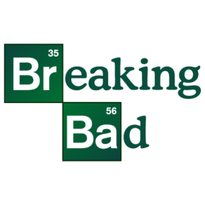
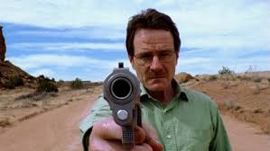
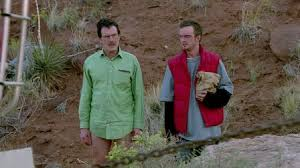
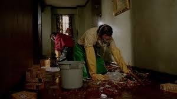
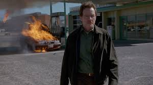
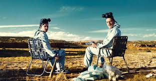
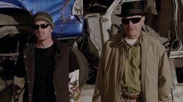

Un profesor de química de escuela secundaria recurre a la venta de drogas para mantener a su familia.


95% de coincidencia
2016
16+
5 temporadas
Breaking Bad
2016
- 16+ -
5 temporadas
Un profesor de Química de secundaria con cáncer terminal se asocia a un ex estudiante para asegurar el futuro de su familia al fabricar y vender metanfetamina.
Temporada 1

Principio del fin

El gato en la bolsa
Luego del fracaso de su primer negocio de drogas, Walt y Jesse deben deshacerse de dos cadáveres. Skyler sospecha que su marido no está involucrado en nada bueno.

Y la bolsa en el río
Mientras Walt limpia el desorden que quedó tras su primer negocio de drogas, piensa en decirle a Skyler la verdad sobre su enfermedad.

Cáncer
Al ser forzado a contar la verdad acerca de su enfermedad, Walt enfrenta el problema de cómo pagar una serie de caros tratamientos contra el cáncer.

Materia gris
Skyler organiza una intervención para convencer a Walt de que acepte la generosa oferta de su ex compañero de investigaciones de pagar el tratamiento contra el cáncer.

Un loco puñado de nada
Los efectos secundarios y el costo del tratamiento crecen, y Walt exige que Jesse encuentre un revendedor para sus drogas; Jesse termina en problemas con un ex convicto.

Acuerdo no violento
Tras el encuentro cercano de Jesse con la muerte, Walt acepta producir más drogas para Tuco, mientras Skyler sospecha que su hermana robó un costoso regalo para bebés.